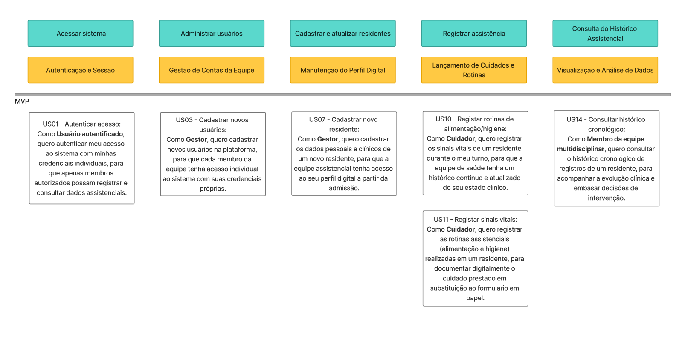
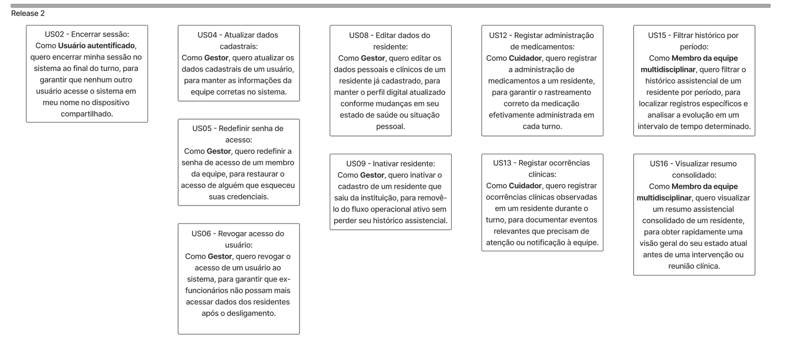

Story Map — VitalTech
O Story Map do VitalTech organiza as User Stories a partir da jornada principal de uso do sistema, apresentando como as funcionalidades se distribuem ao longo das sprints.
Este documento não substitui a lista de Requisitos Funcionais, Requisitos Não Funcionais, Regras de Negócio ou Critérios de Aceitação. Seu objetivo é representar a jornada dos usuários no sistema e mostrar a ordem planejada de entrega das histórias.
User Story Map


Metodologia
A construção do mapa seguiu os seguintes passos:
- Identificação das personas envolvidas no uso do sistema;
- Definição dos objetivos principais do produto;
- Organização das atividades conforme a jornada do usuário;
- Distribuição das User Stories nas sprints;
- Representação visual das entregas em formato de Story Map.
Personas consideradas
| Persona | Papel no sistema |
|---|---|
| Usuário autorizado | Qualquer usuário com credenciais válidas para acessar o sistema conforme seu perfil de permissão. |
| Gestor | Responsável por cadastros base, gestão de usuários e controle administrativo do sistema. |
| Cuidador | Responsável pelo registro assistencial durante a rotina de cuidado dos residentes. |
| Membro da equipe multidisciplinar | Profissional que consulta dados assistenciais para acompanhamento e tomada de decisão clínica. |
Objetivos do Produto no Story Map
| Objetivo | Descrição |
|---|---|
| Garantir acesso seguro e rastreabilidade das ações | Permitir que apenas usuários autorizados acessem o sistema e que suas ações sejam identificáveis. |
| Centralizar registros assistenciais dos residentes | Substituir registros dispersos em papel por registros digitais organizados e consultáveis. |
| Apoiar a consulta e a tomada de decisão clínica | Permitir que a equipe acesse o histórico assistencial dos residentes para acompanhar sua evolução. |
Jornada principal
A jornada principal considerada para o VitalTech é:
Acessar sistema → Administrar usuários → Cadastrar e atualizar residentes → Registrar assistência → Consultar histórico → Encerrar uso
Essa jornada representa o fluxo esperado de uso do sistema: usuários autorizados acessam a plataforma, cadastros base são mantidos, residentes são registrados, informações assistenciais são preenchidas durante o cuidado e os registros ficam disponíveis para consulta posterior.
Atividades do Story Map
| Atividade | Descrição |
|---|---|
| Acessar sistema | Entrada do usuário autorizado no sistema por meio de credenciais individuais. |
| Administrar usuários | Cadastro, atualização e controle de acesso dos membros da equipe. |
| Cadastrar e atualizar residentes | Criação, edição e inativação de cadastros de residentes. |
| Registrar assistência | Registro digital das informações assistenciais realizadas durante o turno. |
| Consultar histórico | Acesso aos registros assistenciais anteriores para acompanhamento do residente. |
| Encerrar uso | Finalização da sessão para evitar uso indevido em dispositivos compartilhados. |
Relação com as Características de Produto
| Característica de Produto | Atividade relacionada | User Stories relacionadas |
|---|---|---|
| CP3 — Autenticação de usuários | Acessar sistema / Encerrar uso | US08, US09 |
| CP4 — Gerenciamento de usuários | Administrar usuários | US10, US11, US12, US13 |
| CP1 — Gestão de residentes | Cadastrar e atualizar residentes | US01, US02, US03 |
| CP2 — Registro assistencial digital | Registrar assistência | US04, US05, US06, US07 |
| CP5 — Consulta do histórico assistencial | Consultar histórico | US14, US15, US16 |
Observação: a ordem das atividades segue a jornada de uso do sistema, e não a numeração sequencial das Características de Produto.
Mapa de Histórias por Sprint
| Sprint / Jornada | Acessar sistema | Administrar usuários | Cadastrar e atualizar residentes | Registrar assistência | Consultar histórico | Encerrar uso |
|---|---|---|---|---|---|---|
| Sprint 2 | US08 — Autenticar usuário no sistema | US10 — Cadastrar usuário | US01 — Cadastrar dados do residente | — | — | US09 — Encerrar sessão do usuário |
| Sprint 3 | — | — | — | US04 — Registrar sinais vitais do residente US05 — Registrar rotinas assistenciais do residente |
US14 — Consultar histórico de registros do residente | — |
| Sprint 4 | — | US11 — Atualizar dados cadastrais do usuário | US02 — Editar dados pessoais e clínicos do residente | US06 — Registrar administração de medicamentos | US15 — Filtrar histórico por período | — |
| Sprint 5 | — | US12 — Redefinir senha de acesso do usuário US13 — Revogar acesso do usuário |
US03 — Inativar cadastro do residente | US07 — Registrar ocorrências clínicas do residente | — | — |
| Sprint 6 | — | — | — | — | US16 — Visualizar resumo assistencial do residente | — |
Detalhamento das Sprints
Sprint 2 — Fundação do sistema
A Sprint 2 concentra a base necessária para iniciar o uso do sistema: autenticação, cadastro inicial de usuários, cadastro de residentes e encerramento de sessão.
| User Story | Justificativa |
|---|---|
| US08 — Autenticar usuário no sistema | Garante que apenas usuários autorizados possam acessar o sistema. |
| US10 — Cadastrar usuário | Permite criar acessos individuais para os membros da equipe. |
| US01 — Cadastrar dados do residente | Cria a base mínima de residentes para que os registros assistenciais possam ser feitos. |
| US09 — Encerrar sessão do usuário | Evita uso indevido em dispositivos compartilhados. |
Sprint 3 — Registro e consulta assistencial inicial
A Sprint 3 introduz o núcleo assistencial do sistema, permitindo registrar informações essenciais do turno e consultá-las posteriormente.
| User Story | Justificativa |
|---|---|
| US04 — Registrar sinais vitais do residente | Permite registrar dados clínicos básicos e recorrentes do residente. |
| US05 — Registrar rotinas assistenciais do residente | Permite registrar cuidados prestados no turno, substituindo parte do formulário em papel. |
| US14 — Consultar histórico de registros do residente | Permite que a equipe acompanhe os registros realizados e utilize as informações para continuidade do cuidado. |
Sprint 4 — Consolidação operacional
A Sprint 4 amplia o uso operacional do sistema, permitindo atualização de cadastros, registro de medicamentos e consulta mais precisa do histórico.
| User Story | Justificativa |
|---|---|
| US11 — Atualizar dados cadastrais do usuário | Permite corrigir ou atualizar informações de membros da equipe. |
| US02 — Editar dados pessoais e clínicos do residente | Mantém os dados do residente atualizados após o cadastro inicial. |
| US06 — Registrar administração de medicamentos | Amplia o escopo do registro assistencial. |
| US15 — Filtrar histórico por período | Facilita a localização de registros em intervalos específicos. |
Sprint 5 — Governança e expansão assistencial
A Sprint 5 fortalece o controle administrativo e amplia os tipos de registros assistenciais disponíveis.
| User Story | Justificativa |
|---|---|
| US12 — Redefinir senha de acesso do usuário | Apoia a recuperação de acesso de membros da equipe. |
| US13 — Revogar acesso do usuário | Impede que usuários desligados ou não autorizados continuem acessando o sistema. |
| US03 — Inativar cadastro do residente | Remove residentes do fluxo operacional ativo sem apagar seu histórico. |
| US07 — Registrar ocorrências clínicas do residente | Permite documentar eventos relevantes observados durante o turno. |
Sprint 6 — Consulta avançada
A Sprint 6 acrescenta uma visão consolidada do residente, apoiando a análise rápida de informações recentes.
| User Story | Justificativa |
|---|---|
| US16 — Visualizar resumo assistencial do residente | Permite obter uma visão geral do estado recente do residente antes de uma intervenção ou reunião clínica. |
Aspectos transversais
Algumas necessidades do sistema não aparecem como histórias isoladas no Story Map, pois afetam várias funcionalidades ao mesmo tempo.
| Aspecto transversal | Como aparece no produto |
|---|---|
| Operação offline e sincronização | Deve estar presente principalmente nas funcionalidades de registro assistencial, permitindo uso mesmo em caso de instabilidade de rede. |
| Rastreabilidade | Cada registro deve armazenar data, horário e usuário responsável. |
| Controle de acesso | Cada perfil deve acessar apenas as funcionalidades compatíveis com sua responsabilidade. |
| Usabilidade em tablets | As telas devem priorizar botões, listas e seleção rápida, reduzindo digitação. |
| Integridade dos registros | Campos obrigatórios e validações devem reduzir registros incompletos ou inconsistentes. |
Esses aspectos devem ser tratados principalmente como Requisitos Não Funcionais, regras de negócio ou critérios de aceitação associados às User Stories.
Visão resumida por sprint
| Sprint | Objetivo | User Stories |
|---|---|---|
| Sprint 2 | Criar a base de acesso, usuários e residentes. | US08, US10, US01, US09 |
| Sprint 3 | Iniciar o ciclo de registro e consulta assistencial. | US04, US05, US14 |
| Sprint 4 | Consolidar cadastros, medicação e consulta por período. | US11, US02, US06, US15 |
| Sprint 5 | Ampliar governança e registros assistenciais. | US12, US13, US03, US07 |
| Sprint 6 | Adicionar visão consolidada para apoio à decisão. | US16 |
Rastreabilidade das User Stories
| User Story | Persona principal | Atividade da jornada | Sprint |
|---|---|---|---|
| US01 | Gestor | Cadastrar e atualizar residentes | Sprint 2 |
| US02 | Gestor | Cadastrar e atualizar residentes | Sprint 4 |
| US03 | Gestor | Cadastrar e atualizar residentes | Sprint 5 |
| US04 | Cuidador | Registrar assistência | Sprint 3 |
| US05 | Cuidador | Registrar assistência | Sprint 3 |
| US06 | Cuidador | Registrar assistência | Sprint 4 |
| US07 | Cuidador | Registrar assistência | Sprint 5 |
| US08 | Usuário autorizado | Acessar sistema | Sprint 2 |
| US09 | Usuário autorizado | Encerrar uso | Sprint 2 |
| US10 | Gestor | Administrar usuários | Sprint 2 |
| US11 | Gestor | Administrar usuários | Sprint 4 |
| US12 | Gestor | Administrar usuários | Sprint 5 |
| US13 | Gestor | Administrar usuários | Sprint 5 |
| US14 | Membro da equipe multidisciplinar | Consultar histórico | Sprint 3 |
| US15 | Membro da equipe multidisciplinar | Consultar histórico | Sprint 4 |
| US16 | Membro da equipe multidisciplinar | Consultar histórico | Sprint 6 |
| Data | Versão | Descrição | Autor |
|---|---|---|---|
| 18/05/2026 | 1.0 | Reestruturação do documento de Story Map com foco em jornada do usuário, organização por sprints e rastreabilidade das User Stories revisadas. | Enzo Menali |